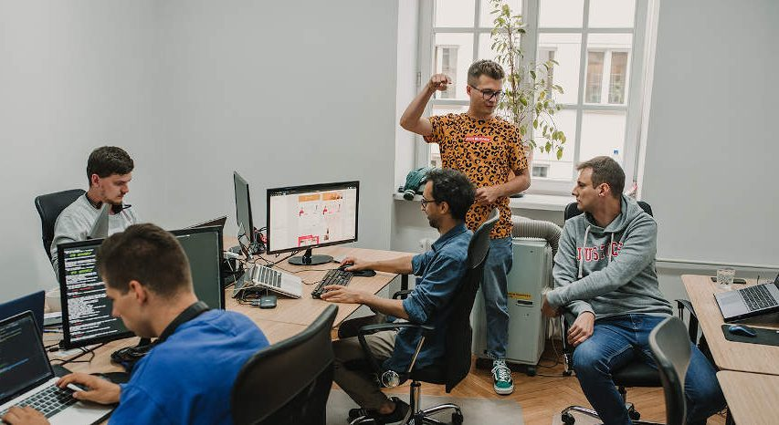

Tech and Telecoms
Fit into fast-moving tech and telecom teams
Tech and telecom companies change quickly. This track helps you keep up without losing your professionalism.

How the training helps you
In this sector, you will work with engineers, sales staff, and customer support, often across different locations. We teach you how to work well with all of them and keep learning new tools on your own.
- Clear writing: write emails, reports, and support tickets that people understand quickly.
- Teamwork across roles: work with people who think and speak differently from you.
- Ownership: take responsibility for your tasks, from start to finish.
- Self-learning: pick up new tools without waiting to be taught.
- Service uptime mindset: understand why customers depend on you being reliable.
Where you will be after the training
You will join your team ready to contribute, communicate well, and grow with the technology around you.